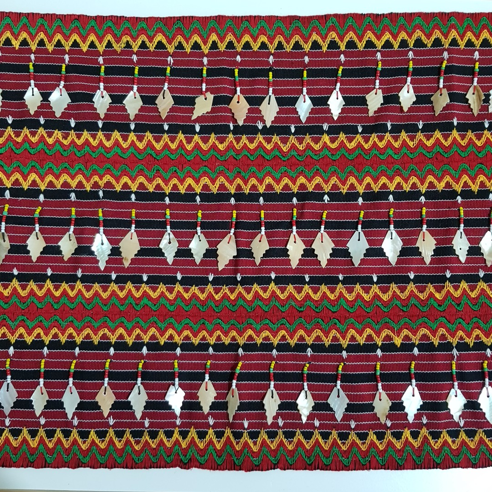

|

The province of Kalinga is one of the many places in the Philippines where the practice of traditional backstrap loom weaving not only survives but thrives. The Kalinga weavers produce handwoven fabrics for a variety of uses, from traditional cloth for clothing and ritual use to commercial fabrics intended for making household decor, souvenirs, bags, and accessories.
The major weaving center in Kalinga is the village of Mabilong in the town of Lubuagan. The weavers of Mabilong are known for their backstrap weaving techniques, which they pass on to their daughters as soon as they are able to operate the loom. But weaving isn’t reserved only for women—male family members take part in the activity as well.
As soon as the women are finished weaving a piece of fabric, the men step in and stitch the designs. The design motifs and symbols are inspired from elements in the environment, such as birds and other animals, mountains, and stars.
Kalinga weaves are characterized by the traditional color combinations of red and black stripes and the use of beads. Many traditional Kalinga weaving designs and patterns remain unchanged through generations, with weavers taking care not to make alterations since the colors and details have specific meanings. Red, for instance, symbolizes bravery while black represents the earth or the ground. Mountain symbols are embroidered in yellow, a color that also symbolizes wealth and fertility.
KALINGA HANDWOVEN FABRICS SHOWING GEOMETRIC PATTERNS. |